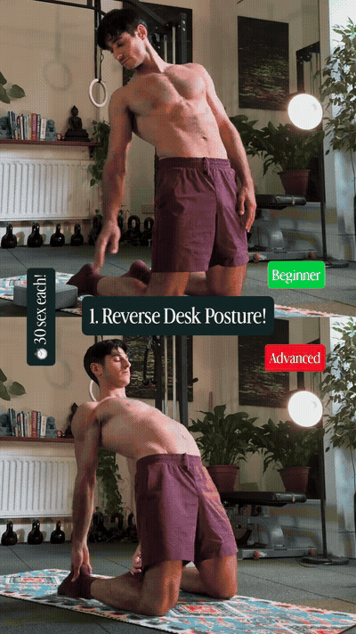
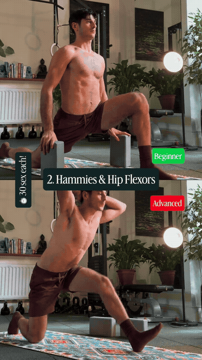
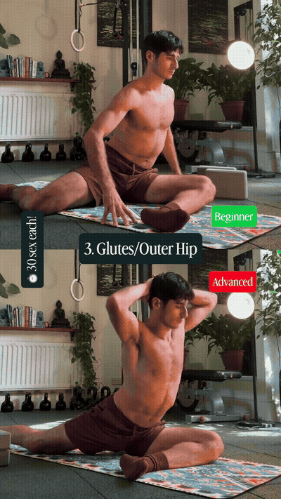
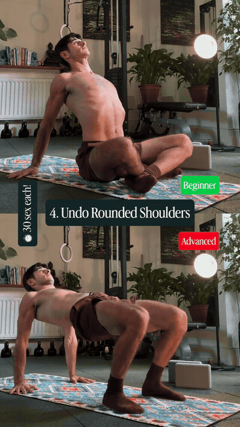
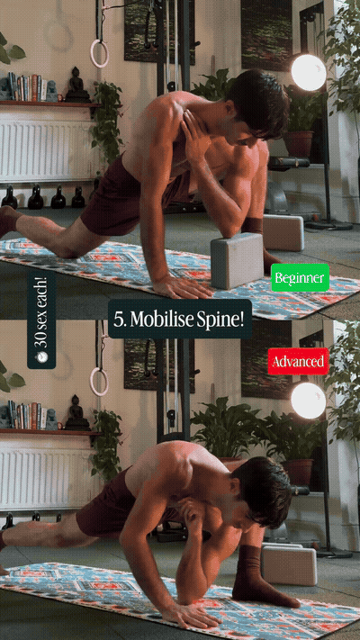

Use the beginner or advanced kneeling chest-and-spine extension shown. Move from the forward-desk posture into a controlled opening without forcing the low back.

Use a supported half-kneeling position to combine a hamstring stretch with hip-flexor work. Blocks are shown as optional support in the reel.

Move into the supported pigeon-style position shown to address the glute and outer-hip area. Scale the front-leg angle to keep the knee comfortable.

Use the floor-based chest and shoulder-opening position shown in the beginner/advanced sequence. Keep the neck relaxed and avoid pinching at the front of the shoulder.

From the lunge-based setup, rotate through the upper back. The advanced version shown moves deeper into the twist; stay with the beginner range until control is reliable.